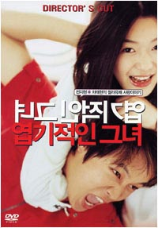

|
|
Mo, 18. Dezember 2006
My Sassy Girl (Kor 2001)
 Vor Weihnachten und als letzter spacemovie Film einer der größten Hits: Das berühmteste, erfolgreichste und beste koreanische romantische Melodrama. Spritzig, bezaubernd und zum Heulen. Der große Stardurchbruch für die freche Jun Ji-hyun.
Gyun-woo ist Student. Ein ziemlich lausiger noch dazu. Wir kriegen nun mit, wie seine Mutter ihn freundlich auffordert endlich seine Tante zu besuchen. Gezwungenermaßen macht er sich also auf (wirklich zur Tante?) und trifft in der U-Bahn ein Mädchen. Sie ist eigentlich genau sein Typ, aber genauso sehr hasst er Mädchen, die, wie sie, total betrunken sind. Das Schicksal will es nun, dass er sich um sie kümmern muss, da sie nach Wiederhervorbringen von leckeren Nudeln (nichts für schwache Nerven!) in der U-Bahn zusammenbricht und ihn kurz zuvor noch "Honey" nennt. Der arme, barmherzige Gyun-woo schleppt sie nun mit all seinen spärlichen Kräften ins nächste Motel und wacht zur Belohnung am nächsten Tag im Gefängnis auf. Er muss sich nun dem Mädchen des Vortages stellen und ihr Rede und Antwort stehen... was gar nicht so leicht ist, wie es sich anhört! Von nun an sind die beiden fast unzertrennlich (und wie!) und sollen eine Menge Abenteuer erleben.
Ein amüsanter, kurzweiliger Film, der die Filmlandchaft Koreas auf den Kopf stellte und sogar Steven Spielbergs DreamWorks dazu bewog, die Rechte für ein US-Remake zu kaufen, wie bei unseren meisten asiatischen spacemovie Filmen.
With its easy yet unpredictable blend of laugh-out-loud broad comedy, metaphysical romance, and fun characters, "My Sassy Girl" can easily be included among the best that Korean cinema has to offer.
"My Sassy Girl" is based on an on-line serial written by Kim Ho-sik that detailed his relationship with his off-the-wall college girlfriend. This was eventually compiled into a best-selling book and caught the attention of director Kwak Jae-young, who wrote the script for the film. The story kicks off with college student Kyun-woo (Korean pop singer Cha Tae-hyun, in his feature film debut) crossing paths with a drunk girl (Jun Ji-hyun of "Il Mare") on a late-night subway. Just before she passes out, the girl looks at Kyun-woo and calls him 'honey'. The other passengers, assuming him to be the hapless girl's boyfriend, demand that Kyun-woo look after her. After carrying her on his back for what seems to be miles, Kyun-woo drops the girl off at a motel. But instead of leaving her and getting on his way, Kyun-woo finds himself intrigued by the nameless girl and vows to do whatever he can to heal her sorrow.
 Unfortunately, he gets far more than he bargained as he becomes wrapped
around the finger of this strange girl, whose dramatic mood swings are
outmatched only by her penchant for sociopathic behavior. When they
dine out and Kyung-woo orders anything but coffee, she barks her mantra
"Do you wanna die?" and then promptly changes his order to coffee. When
her feet begin aching from walking, she forces Kyung-woo to switch his
comfortable running shoes for her high heels. And being a budding
screenwriter, she demands that Kyung-woo read her wacky treatments, or
else face an ass kicking. However, despite these crazy antics (not to
mention landing in jail a few times), Kyun-woo finds himself hopelessly
hooked on this 'sassy girl'. And though the girl seems to relish in
humiliating and belittling those around her, it becomes clear that
underneath the brash exterior is a wounded soul who holds a genuine
affection for Kyun-woo.
Unfortunately, he gets far more than he bargained as he becomes wrapped
around the finger of this strange girl, whose dramatic mood swings are
outmatched only by her penchant for sociopathic behavior. When they
dine out and Kyung-woo orders anything but coffee, she barks her mantra
"Do you wanna die?" and then promptly changes his order to coffee. When
her feet begin aching from walking, she forces Kyung-woo to switch his
comfortable running shoes for her high heels. And being a budding
screenwriter, she demands that Kyung-woo read her wacky treatments, or
else face an ass kicking. However, despite these crazy antics (not to
mention landing in jail a few times), Kyun-woo finds himself hopelessly
hooked on this 'sassy girl'. And though the girl seems to relish in
humiliating and belittling those around her, it becomes clear that
underneath the brash exterior is a wounded soul who holds a genuine
affection for Kyun-woo.
Festivalpreise:
Fant-Asia Film Festival - Most Popular Film
Japanese Academy Awards - Nomination Best Foreign Film
Grand Bell Awards, South Korea - Best Actress + Adapted Screenplay
Hochi Film Awards - Best Foreign Language Film
Hong Kong Film Awards - Best Asian Film
My Sassy Girl (Yeopgijeogin geunyeo) Kor 2001, kor.mdU,
137 min. R: Kwak Jae-young, D: Jun Ji-hyun, Cha Tae-hyun
19:30 Uhr, Space04 Kunsthaus Graz, € 5.-
- [Official Website]
- [imdb] 8.0/10 (5,268 votes)
- [asianfilmweb]
- [molodezhnaja]
- [KFCC]
- [wikipedia]